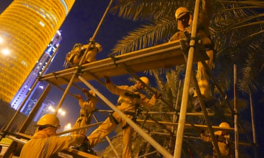

More than 6,500 migrant workers from India, Pakistan, Nepal, Bangladesh and Sri Lanka have died in Qatar since it won the right to host the World Cup 10 years ago, the Guardian can reveal.
The findings, compiled from government sources, mean an average of 12 migrant workers from these five south Asian nations have died each week since the night in December 2010 when the streets of Doha were filled with ecstatic crowds celebrating Qatar’s victory.
Data from India, Bangladesh , Nepal and Sri Lanka revealed there were 5,927 deaths of migrant workers in the period 2011–2020. Separately, data from Pakistan’s embassy in Qatar reported a further 824 deaths of Pakistani workers, between 2010 and 2020.
Mohammad Shahid Miah, 29, from Bangladesh, died when floodwater in his room came into contact with an exposed electric cable, electrocuting him.
The total death toll is significantly higher, as these figures do not include deaths from a number of countries which send large numbers of workers to Qatar, including the Philippines and Kenya. Deaths that occurred in the final months of 2020 are also not included.
In the past 10 years, Qatar has embarked on an unprecedented building programme, largely in preparation for the football tournament in 2022. In addition to seven new stadiums, dozens of major projects have been completed or are under way, including a new airport, roads, public transport systems, hotels and a new city, which will host the World Cup final.
While death records are not categorised by occupation or place of work, it is likely many workers who have died were employed on these World Cup infrastructure projects, says Nick McGeehan, a director at FairSquare Projects, an advocacy group specialising in labour rights in the Gulf. “A very significant proportion of the migrant workers who have died since 2011 were only in the country because Qatar won the right to host the World Cup,” he said.
There have been 37 deaths among workers directly linked to construction of World Cup stadiums, of which 34 are classified as “non-work related” by the event’s organising committee. Experts have questioned the use of the term because in some cases it has been used to describe deaths which have occurred on the job, including a number of workers who have collapsed and died on stadium construction sites.
The findings expose Qatar’s failure to protect its 2 million-strong migrant workforce, or even investigate the causes of the apparently high rate of death among the largely young workers.
Behind the statistics lie countless stories of devastated families who have been left without their main breadwinner, struggling to gain compensation and confused about the circumstances of their loved one’s death.
Ghal Singh Rai from Nepal paid nearly £1,000 in recruitment fees for his job as a cleaner in a camp for workers building the Education City World Cup stadium. Within a week of arriving, he killed himself.
Another worker, Mohammad Shahid Miah, from Bangladesh, was electrocuted in his worker accommodation after water came into contact with exposed electricity cables.
In India , the family of Madhu Bollapally have never understood how the healthy 43-year old died of “natural causes” while working in Qatar. His body was found lying on his dorm room floor.
Qatar’s grim death toll is revealed in long spreadsheets of official data listing the causes of death: multiple blunt injuries due to a fall from height; asphyxia due to hanging; undetermined cause of death due to decomposition.
But among the causes, the most common by far is so-called “natural deaths”, often attributed to acute heart or respiratory failure.
Based on the data obtained by the Guardian, 69% of deaths among Indian, Nepali and Bangladeshi workers are categorised as natural. Among Indians alone, the figure is 80%.
The Guardian has previously reported that such classifications, which are usually made without an autopsy, often fail to provide a legitimate medical explanation for the underlying cause of these deaths.
In 2019 it found that Qatar’s intense summer heat is likely to be a significant factor in many worker deaths. The Guardian’s findings were supported by research commissioned by the UN’s International Labour Organization which revealed that for at least four months of the year workers faced significant heat stress when working outside.
Labourers from Nepal put up scaffolding for the launch of the World Cup logo. They start work long before sunrise to avoid the heat.Photograph: Pete Pattisson
A report from Qatar government’s own lawyers in 2014 recommended that it commission a study into the deaths of migrant workers from cardiac arrest, and amend the law to “allow for autopsies … in all cases of unexpected or sudden death”. The government has done neither.
Qatar continues to “drag its feet on this critical and urgent issue in apparent disregard for workers’ lives”, said Hiba Zayadin, Gulf researcher for Human Rights Watch. “We have called on Qatar to amend its law on autopsies to require forensic investigations into all sudden or unexplained deaths, and pass legislation to require that all death certificates include reference to a medically meaningful cause of death,” she said.
The Qatar government says that the number of deaths – which it does not dispute – is proportionate to the size of the migrant workforce and that the figures include white-collar workers who have died naturally after living in Qatar for many years. It also says that only 20 per cent of expatriates from the countries in question are employed in construction, and that work-related deaths in this sector accounted for fewer than 10 percent of fatalities within this group.
“The mortality rate among these communities is within the expected range for the size and demographics of the population. However, every lost life is a tragedy, and no effort is spared in trying to prevent every death in our country,” the Qatari government said in a statement by a spokesperson.
The official added that all citizens and foreign nationals have access to free first-class healthcare, and that there has been a steady decline in the mortality rate among “guest workers” over the past decade due to health and safety reforms to the labour system.
Other significant causes of deaths among Indians, Nepalis and Bangladeshis are road accidents (12%), workplace accidents (7%) and suicide (7%).
Covid-related deaths, which have remained extremely low in Qatar, have not significantly affected the figures, with just over 250 fatalities among all nationalities.
The Guardian’s research has also highlighted the lack of transparency, rigour and detail in recording deaths in Qatar. Embassies in Doha and governments in labour-sending countries are reluctant to share the data, possibly for political reasons. Where statistics have been provided, there are inconsistencies between the figures held by different government agencies, and there is no standard format for recording the causes of death. One south-Asian embassy said they could not share data on the causes of death because they were only recorded by hand in a notebook.
“There is a real lack of clarity and transparency surrounding these deaths,” said May Romanos, Gulf researcher for Amnesty International. “There is a need for Qatar to strengthen its occupational health and safety standards.”
The committee organising the World Cup in Qatar, when asked about the deaths on stadium projects, said: “We deeply regret all of these tragedies and investigated each incident to ensure lessons were learned. We have always maintained transparency around this issue and dispute inaccurate claims around the number of workers who have died on our projects.”
In a statement, a spokesperson for Fifa, football’s world governing body, said it is fully committed to protecting the rights of workers on Fifa projects. “With the very stringent health and safety measures on site … the frequency of accidents on Fifa World Cup construction sites has been low when compared to other major construction projects around the world,” they said, without providing evidence.
The heading and sub-heading on this article were amended on 2 March 2021 to clarify that the figure for 6,500 deaths covers the 10-year period since Qatar was awarded the World Cup. The article text was amended on 8 and 18 March 2021 to include further comments from the Qatar government relating to the percentage of expatriates employed in construction and work-related deaths in this sector.